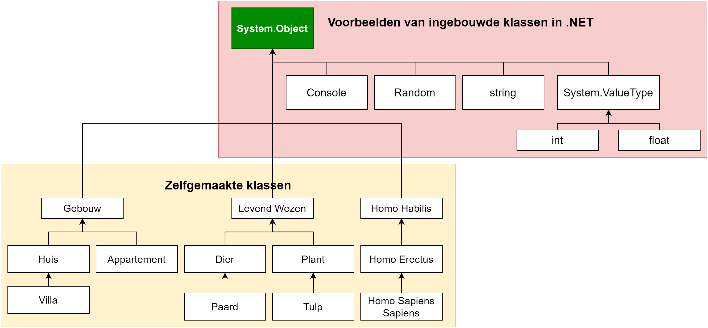

85 Gevorderde overervingsconcepten
C# houdt van objecten. De hele taal is letterlijk opgebouwd om maximaal het object georiënteerd programmeren te omarmen. Van zodra je een nieuw project aanmaakt kan je niet naast de internal class Program zien. Hoe meer je C# en de bestaande bibliotheken bekijkt, hoe duidelijker dit wordt. Alles is een klasse.
Maar dan stelt zich natuurlijk de vraag: staat er nog iets boven alle klassen die wij aan het maken zijn? Is er misschien een soort oer-klasse waar alle klassen van overerven?
De vraag stellen is ze beantwoorden! Er is effectief een oer-klasse, genaamd de System.Object-klasse, waar alles en iedereen in C# van moet overerven.
85.1 System.Object
Alle klassen in C# zijn afstammelingen van de System.Object klasse. Zowel de bestaande ingebouwde klassen zoals Random en Console. Maar ook klassen die je zelf maakt erven over van System.Object. En ja, zelfs de bestaande valuetype datatypes zoals int en bool zijn verre afstammelingen van System.Object.

Indien je een klasse schrijft zonder een expliciete parent dan zal deze steeds System.Object als rechtstreekse parent hebben. Ook afgeleide klassen stammen dus uiteindelijk af van System.Object. Concreet wil dit zeggen dat alle klassen System.Object-klassen zijn en dus ook de bijhorende functionaliteit ervan hebben.
Om de klasse Object niet te verwarren met het concept “object” zullen we hier steeds praten over System.Object.
85.1.1 Impliciete overerving
Wanneer je een klasse Student aanmaakt als volgt: class Student{ }. Dan gebeurt er een zogenaamde impliciete overerving van System.Object. Er staat dus eigenlijk:
internal class Student: System.Object
{ }Wat je trouwens ook expliciet zelf mag schrijven, dat maakt niet uit. Maar van zodra je een klasse schrijft die nergens expliciet van overerft, dan zal deze automatisch van System.Object overerven.1:
85.1.2 Hoe ziet System.Object er uit?
Wanneer je een lege klasse maakt dan zal je misschien al gezien hebben dat instanties van deze nieuwe klasse reeds 4 methoden ingebouwd hebben, dit zijn uiteraard de methoden die in de System.Object klasse staan gedefiniëerd:
| Methode | Beschrijving |
|---|---|
Equals() |
Gebruikt om te ontdekken of twee instanties gelijk zijn. |
GetHashCode() |
Geeft een unieke hash terug van het object; nuttig om o.a. te sorteren. |
GetType() |
Geeft het datatype (de klasse) van het object terug. |
ToString() |
Geeft een string terug die het object voorstelt. |
Deze methoden zijn redelijk nutteloos in het begin. Enkel door ze zelf te overriden zullen ze hun nut bewijzen. Uiteraard kan je de de methoden testen om te zien wat er gebeurt.
85.1.3 GetType()
Stel dat je een klasse Student hebt gemaakt in je project. Je kan dan op een object van deze klasse de GetType()-methode aanroepen om te weten wat het type van dit object is:
Student stud1 = new Student();
Console.WriteLine(stud1.GetType());Dit zal als uitvoer de namespace gevolgd door het type van het object op het scherm geven . Als je project bijvoorbeeld StudentManager heet (en je namespace dus vermoedelijk ook) dan zal er op het scherm verschijnen: StudentManager.Student.
Wil je enkel het type zonder namespace dan is het nuttig te beseffen dat GetType() eigenlijk een object teruggeeft van het type Type met meerdere eigenschappen, waaronder Name. Volgende code zal enkel Student op het scherm tonen:
Student stud1 = new Student();
Console.WriteLine(stud1.GetType().Name);85.1.4 ToString(): het werkpaardje van System.Object
Deze methode vind ik het nuttigst. Wanneer je schrijft:
Console.WriteLine(stud1);Wordt er eigenlijk een impliciete aanroep naar ToString gedaan. Er staat dus eigenlijk:
Console.WriteLine(stud1.ToString());Op het scherm verschijnt dan StudentManager.Student. Waarom? Wel, de methode ToString() wordt in System.Object() ongeveer als volgt beschreven:
public virtual string ToString()
{
return GetType();
}Merk twee zaken op:
GetType()wordt aangeroepen en die output krijg je dus terug.- De methode is virtual gedefinieerd.
Alle 4 methoden in System.Object zijn virtual, en je kan deze dus override’n!
Nu komen we tot het hart van deze methoden. Aangezien ze alle 4 virtual zijn, kunnen we de werking ervan naar onze hand zetten in onze eigen klassen. Aardig wat .NET bibliotheken rekenen er namelijk op dat je deze methoden op de juiste manier hebt aangepast, zodat ook jouw nieuwe klassen perfect kunnen samenwerken met deze bibliotheken. Een eerste voorbeeld hiervan toonde ik net: de Console.WriteLine methode gebruikt van iedere parameter dat je er aan meegeeft de ToString-methode om de parameter op het scherm als string te tonen.
85.1.4.1 ToString() overriden
Het zou natuurlijk fijner zijn dat de ToString()-methode van onze student nuttigere info teruggeeft.
Stel dat we de Voornaam gevolgd door de Geboortejaar (ook een autoprop) willen terugkrijgen. We kunnen dat eenvoudig verkrijgen door ToString() te overriden:
internal class Student
{
public int Geboortejaar {get;set;}
public string Voornaam {get;set;}
public override string ToString()
{
return $"{Voornaam} ({Geboortejaar})";
}
}Wanneer je nu Console.WriteLine(stud1); - gelet dat hij de properties Voornaam en Geboortejaar heeft - zou schrijven dan wordt je output: Tim Dams (1981).
Een extra handigheidje van ToString is dat deze methode wordt gebruikt tijdens het debuggen om je objecten samen te vatten in het watch-venster.
85.1.5 De Equals() methode
Ook deze methode kan je overriden om twee objecten met elkaar te vergelijken:
if(stud1.Equals(stud2))De Equals()-methode heeft als signatuur: public virtual bool Equals(Object o) Twee objecten zijn gelijk voor .NET als aan volgende afspraken wordt voldaan:
- Het moet
falseteruggeven indien de parameteronullis. - Het moet
trueteruggeven indien je het object met zichzelf vergelijkt (bv.stud1.Equals(stud1)). - Het mag enkel
trueteruggeven als zowelstud1.Equals(stud2);alsstud2.Equals(stud1);waar zijn. - Indien
stud1.Equals(stud2)true teruggeeft enstud1.Equals(stud3)ooktrueis, dan moetstud2.Equals(stud3)ooktruezijn.
85.1.5.1 Equals() overriden
Het is echter aan de maker van de klasse om te beslissen wanneer 2 objecten van een zelfde type gelijk zijn. Het is dus niet zo dat iedere waarde van een instantievariabele bijvoorbeeld gelijk moet zijn opdat 2 objecten gelijk zijn. Alles hangt af van de wijze waarop de klasse dienst moet doen.
Stel dat we vinden dat een student gelijk is aan een andere student indien z’n Voornaam en Geboortejaar dezelfde is, we kunnen dan de Equals-methode overriden als volgt in de Student klasse:
public override bool Equals(Object o)
{
Student temp = (Student)o; //Zie opmerking na code!
return (Geboortejaar == temp.Geboortejaar && Voornaam == temp.Voornaam);
}De lijn Student temp = (Student)o; zal het object o casten naar een Student. Doe je dit niet dan kan je niet aan de interne Student-variabelen van het object o. Dit concept noemen we polymorfisme (zie nog steeds hoofdstuk 16….We komen dichter!).
85.1.6 GetHashcode() overriden
Indien je Equals override dan moet je eigenlijk ook GetHashCode overriden, daar er wordt verondersteld dat twee gelijke objecten ook dezelfde unieke hashcode teruggeven. Wil je dit dus implementeren dan zal je dus een (bestaand) algoritme moeten schrijven dat een uniek nummer genereert voor ieder niet-gelijke object. Algoritmes bespreken om zelf een hash te genereren liggen niet in de scope van dit boek.
85.1.7 ReferenceEquals()
Als je nog wat dieper zou graven in de documentatie van System.Object zou je ontdekken dat er ook een static methode met als signatuur static bool ReferenceEquals(object obj1, object obj2) bestaat. Deze handige methode laat je toe om te controleren of 2 variabelen dezelfde referentie hebben. Je kan hiermee dus kijken of 2 variabelen naar hetzelfde object in de heap verwijzen. Het gebruik ervan is eenvoudig:
if(ReferenceEquals(student1,student3))
{
Console.WriteLine("Beide bevatten zelfde referentie!");
}Nu stelt zich de vraag: waarom deze controle niet met de == doen? Alhoewel dit perfect toegestaan is, moet je je ervan bewust zijn dat de werking van == kan overschreven worden.Ik leg dit niet uit, maar kijk zeker eens in de appendix naar het hoofdstuk Operator overloading.
Je hebt dus geen garantie dat in alle projecten de == werkt zoals je zou verwachten. Prefereer daarom om ReferenceEquals() te gebruiken. Merk op dat we System. voor de methodenaam mogen weglaten, net zoals we Object in plaats van System.Object mogen schrijven.
“Ik ben nog niet helemaal mee…”
Niet getreurd, je bent niet de enige: het is allemaal een hoop nieuwe kennis om te verwerken. En ik vermoed dat je nu niet bepaald overweldigd bent van de nieuwe kennis. Mogelijk heb je nu zoiets van? “Ok..wow?! Wat krijg ik nu juist extra wetende dat al mijn klassen overerven van een oer-klasse? 4 methoden en wat beloofde compatibiliteit met andere .NET bibliotheken? Call me …unimpressed”.Begrijpelijke reactie.
Hou vol, we zijn een hoop puzzelstukjes aan het opnemen die finaal zullen samenkomen om een gigantisch knappe OOPuzzel te maken (see what I did there?) In die puzzel zal polymorfisme onze sterspeler worden. Het zal ons toelaten erg krachtige code te schrijven.
Polymorfisme wordt onze doelpuntenmaker, maar
System.Objectzal steeds de perfecte voorzet geven!
Je kan in de .NET documentatie altijd opzoeken waar een klasse van overerft. De
Typeklasse bijvoorbeeld erft finaal ook vanSystem.Objectover. Eerst erftTypeover van deMemberInfoklasse, die op zijn beurt overerft van de oer-klasse.↩︎